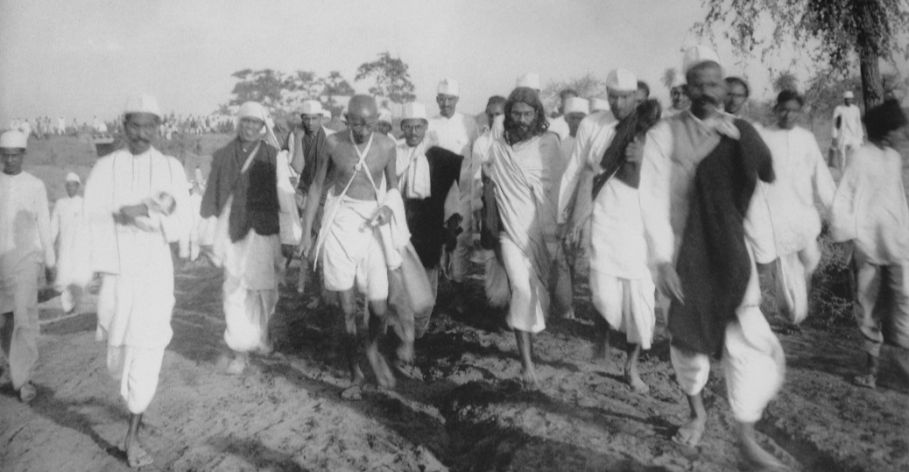
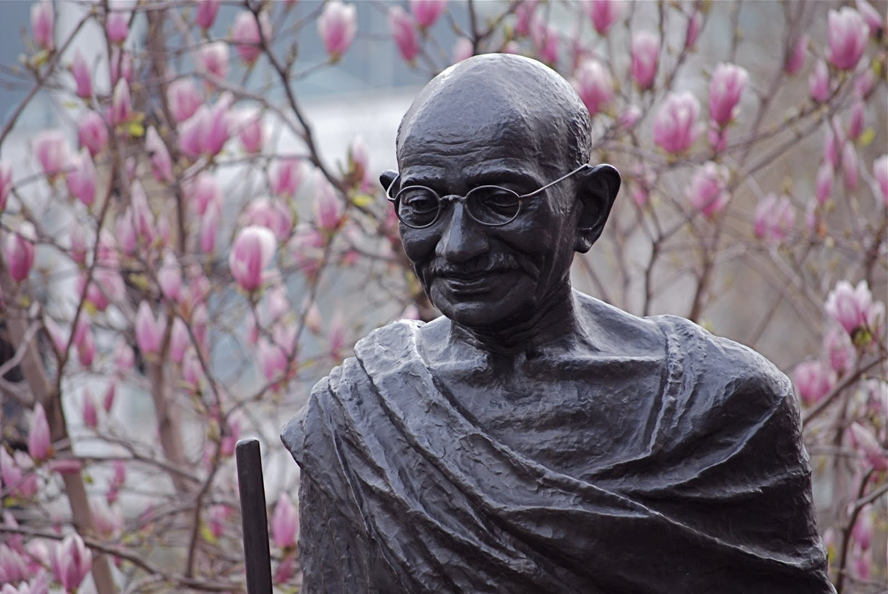
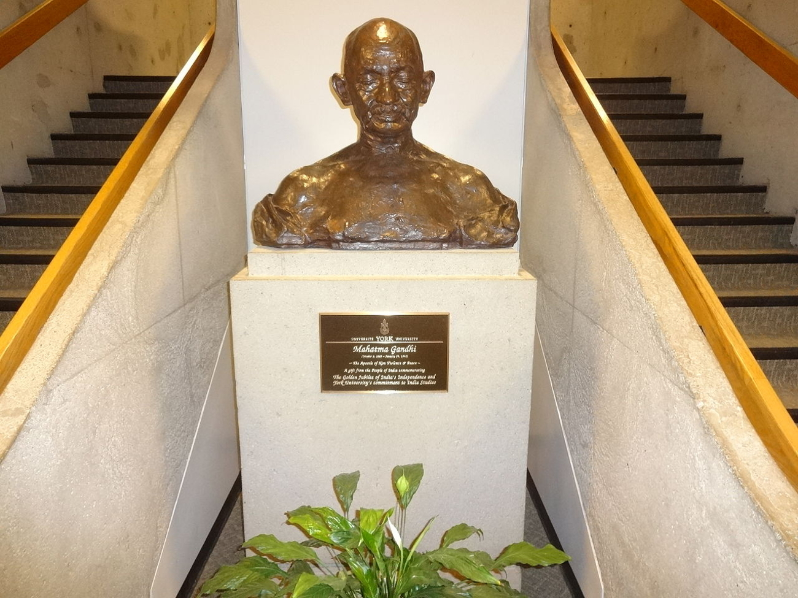

"The weak can never forgive. Forgiveness is the attribute of the strong." - Mahatma Gandhi
Photo Collection

Gandhi at the famous Salt March of April and May 1930.A remarkable quote about the importance of learning.Patience means self suffering

The Gandhi Memorial Mandapam in Kanyakumari, India. The memorial was designed in such a way that on Mahatma Gandhi's birthday, 2 October, the first rays of the sun fall on the exact place where his ashes were kept before immersion

Statue of Mahatma Gandhi at York University of Toronto, Canada